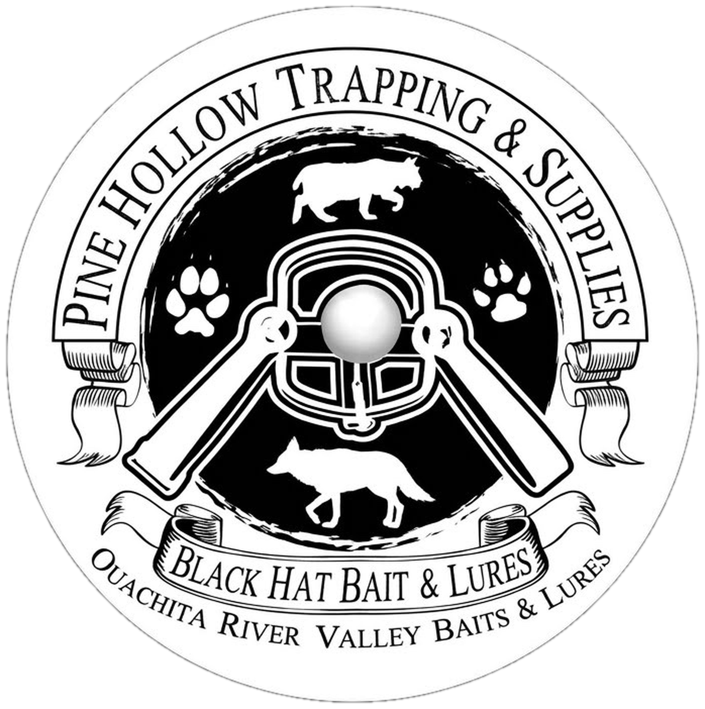
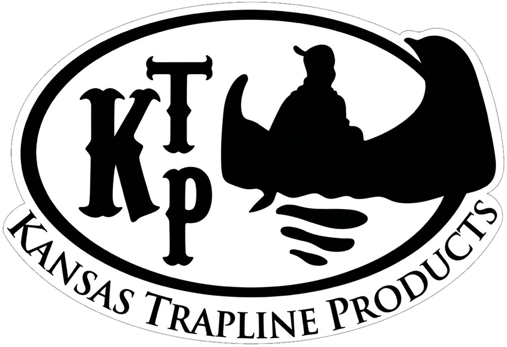

In partnership with


Loading…


Loading…
We'll load that state's season reminders. You can change it anytime in Settings — handy near state lines.
The map will open here every time — your county, your farms, right where you trap. Takes ten seconds, and you can change it anytime in Settings.
One line at a time — everything follows the active line.
Every catch, newest first.
What's actually producing?
Your numbers for the season.
Licenses and landowner info, kept on this phone only.
Tap a photo to view it — pinch to zoom so the warden can read it, and the official state license site rides along.
Who owns the ground you trap — phone numbers, permission slips, boundaries, and the notes you don't want to forget.
Odometer trips and tracked routes for the line you're on — for the tax book. Track a route follows you on the map and files its miles here when you stop. Export every line's log from the Data tab → Export mileage (CSV).
Back up your data and download reports.
Saves one file with everything — your lines, sets, and logs. Import it back after a reinstall or on a new phone.
Every photo and voice memo from every line, in one file. The backup above holds your data but not your pictures — this file is their backup.
Send the line you are on — its sets and logs only — to another trapper (AirDrop, Nearby Share, Messages, email…). On their phone it lands as a new line of their own. Photos do not ride along.
Bring in a backup file to restore your data, or a line another trapper sent you. A shared line lands as a new line of your own.
Bring in pins you saved in Google Maps, My Maps, or Google Takeout.
One pin at a time: in Google Maps tap Share, copy the link, and paste it here.
Set the filters, watch the match count, then download the report you want. The filters shape the catches report only — the sets and mileage downloads always include everything.
Downloads your catches as a spreadsheet file (.csv), honoring the filters above.
Downloads your sets as a spreadsheet file (.csv).
Downloads this line's trip log as a spreadsheet file (.csv).
Opossum Foot beta.
Applies to the active trap line (). Changing the state takes effect immediately.
What your trap tags say — many states require your name and address, or a state-issued ID number, on every trap. Kept on this phone only; it shows on the Seasons tab with your state's tag rule.
Not set — the map opens on your trapping state.
Every switch in the app: features, bottom-bar tabs, and set-form fields.
On/off switches for app features — alerts, weather, wind, voice, and map tools. Most apply to the whole app; the ones set per trap line say so.
When you log a catch, warning boxes flag season and bag-limit trouble before you save. Set per trap line — the active line only (); the season badges on the animal list stay either way, they're just information.
Shows the ruler button on the map — tap two points to measure a distance in feet, yards, or miles. Off hides the button and ends any measuring underway.
Records your trips and routes per line — read them in Paperwork under Route and Mileage, and export the mileage CSV from Data. Off stops new recording; trips already saved stay put.
Shows the sign and forage layer on the map — animal sign, forage, and finds, each with its own icon — plus the map button for adding them. Off hides the layer and the button; markers already saved stay saved.
Adds a Tag section on the catch sheet for the tag or sealing number, the date tagged, and a photo of the tag — for species your state tags, like bobcat and otter. Always optional; off hides the section and My Tags in Paperwork, and records already saved stay on this phone.
Sets that go past your check interval with no activity turn red on the map, with a due countdown on the set's details. Any edit, catch, or check-in restarts the clock; off hides the red pins and countdowns.
Sets past this long without any activity turn red on the map. Any edit, catch, or check-in restarts the clock. The quick “Checked — nothing changed” button only restarts the clock — it saves nothing to History. Turn alerts off to hide the red pins and countdowns.
Adds the dictation and voice-memo buttons on set and catch notes. Transcription uses your phone's speech recognition and needs a connection; the recordings themselves stay on this phone.
Shows current conditions and the next 12 hours on the map chip, and attaches the weather to new sets and catches on its own. Sends your coordinates to Open-Meteo for the forecast — needs a connection.
A small arrow at the edge of each set pin points downwind — the way your scent carries. Arrows show when you're zoomed in close, and use live wind when you're online.
Choose which tabs ride on the bottom bar for the active trap line (). Map, Data, and Settings always show.
Shows the History tab on the bottom bar for the active line — the running log of checks, catches, and changes. Off hides the tab; nothing in it is deleted.
Shows the Scorecard tab on the bottom bar for the active line — your season at a glance. Off hides the tab; nothing in it is deleted.
Shows the Seasons tab on the bottom bar for the active line — season dates and rules for your state. Off hides the tab; nothing in it is deleted.
Shows the Paperwork tab on the bottom bar for the active line — licenses, tags, landowners, and mileage. Off hides the tab; nothing in it is deleted.
Shows the Totals tab on the bottom bar for the active line — your season totals, broken down by species, set, and trap. Off hides the tab; nothing in it is deleted.
Choose which fields show when you add a set. Set name, Status, and Date set always show — they're required.
Shows the Trap type field when you add a set. Off hides the field, and sets saved while it's off leave it blank.
Shows the Trap details field when you add a set. Off hides the field, and sets saved while it's off leave it blank.
Shows the Set type field when you add a set. Off hides the field, and sets saved while it's off leave it blank.
Shows the Bait field when you add a set. Off hides the field, and sets saved while it's off leave it blank.
Shows the Lure field when you add a set. Off hides the field, and sets saved while it's off leave it blank.
Shows the Urine field when you add a set. Off hides the field, and sets saved while it's off leave it blank.
Shows the Visual field when you add a set. Off hides the field, and sets saved while it's off leave it blank.
Shows the Audio field when you add a set. Off hides the field, and sets saved while it's off leave it blank.
Shows the Other attractants field when you add a set. Off hides the field, and sets saved while it's off leave it blank.
Shows the Notes field when you add a set. Off hides the field, and sets saved while it's off leave it blank.
Pin colors — applies to the map pins and the four status filter chips.
Your spots never leave your phone.
Opossum Foot has no account, no login, and no cloud. Every set, catch, photo, and voice memo is stored only in this phone's browser storage. Nothing you enter is stored anywhere else — the only network traffic is map tiles, the app's own files, weather lookups (only if you turn weather on), and live voice transcription (only when you tap the microphone and have a connection).
The honest catch: because there's no cloud backup, a lost phone, a wiped phone, or clearing this browser's data can destroy your records. Export a CSV backup regularly — that's your safety net.
Shows the county and exact coordinates on a set's details and on the weather tab. Off keeps them hidden, so screenshots are safe to share.
Adds Latitude and Longitude columns to the CSV exports you download from Data. Off by default, so a spreadsheet you share never carries your pins.
Logo & brand artwork by Lydia Reichenbacher · Tight Chains Co.
No accounts. No cloud. No analytics. Sponsors keep Opossum Foot free — no popups, no tracking, no nonsense.
Season reminders are reminders only — always verify with your state agency and local ordinances.
Build —
Viewport —
The trapper's guide to the app, and the legal notices.
Everything on this phone — sets, catches, photos, voice memos, licenses, landowners — gets permanently deleted. It will be gone forever. There is no undo and no cloud copy.
Back up all data (JSON) first if you want to keep a copy. The backup lives on the Data tab, under Keep your data safe.
Purge catch history. Delete old or test catch records without touching your sets. Pick a line, a date range, or both — matching records, their photos, and their voice memos are gone forever.
Current conditions where you are.
Loading…
Loading…
Location is sent to the National Weather Service and Open-Meteo, free weather services, each time you open this. Coordinates are rounded; nothing is stored by them.
Sign, forage, and finds — marked on the map, not as sets. They never join check rotations or catch counts.
Saving files this as a trip in Route and Mileage for the active line, with the route kept on the record.
The colored dot on each line is that pin's color on the map.
Tap a name to pick it. Tap it again to let it go.
Every photo on this line, newest first — each one labeled with the set, catch, or record it belongs to. Tap a photo to see it full-size.
Set and catch photos only. Send the pack after the line share — on the other phone, each photo re-attaches to the set with the same name.
No photos on this line yet. Photos you add to a set or a catch will show up here.
e.g. sardines
e.g. gland lure
e.g. fox urine
e.g. flagging tape
e.g. squeaker
e.g. t-bone
Prospect = a scouted spot with no trap in the ground yet. It stays out of check rotations and catch counts until you set it.
No notes, memos, or photos yet.
No hurry — most tagging happens days later, at a station. You can fill this in any time from History or Paperwork → My Tags.
Update this set for next time?
Trap, set type, bait, lure — anything that changed.
Changes apply to future catches only.